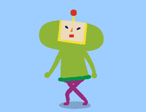
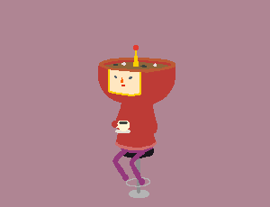
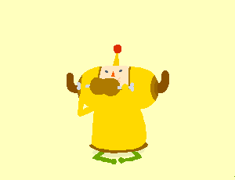

When his father accidentally destroys all the stars in a
drunken jamboree, Our Little Prince is tasked with rolling up chaos to restore our
night-time sky.

Miso loves to drink coffee while
looking pensive and comtemplative. In reality, her head is completely empty (besides miso soup).

Nik loves to eat. He's mastered the art of talking with a full
mouth. His name is dervied from the Japanese word for meat, niku.
